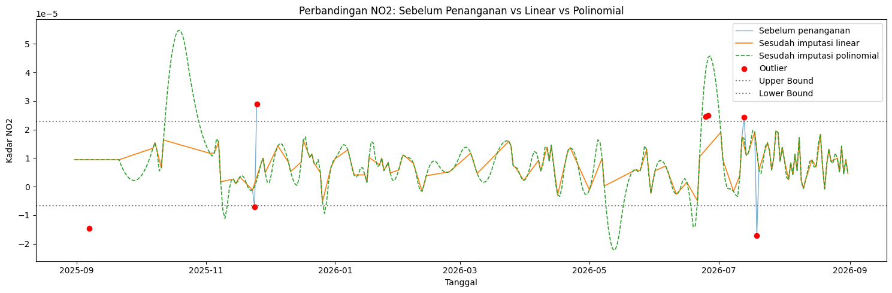
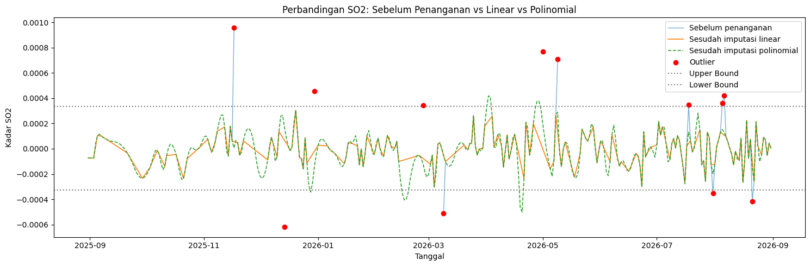
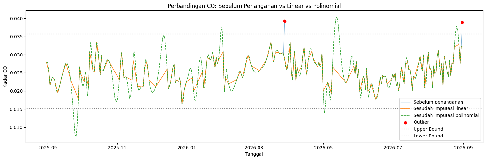
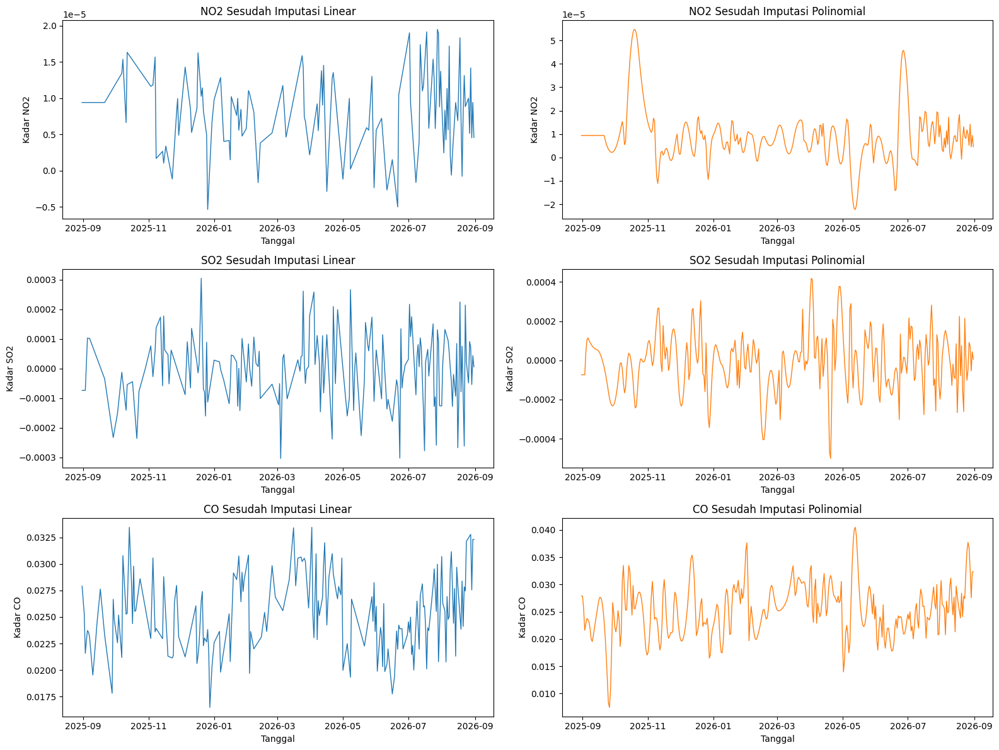
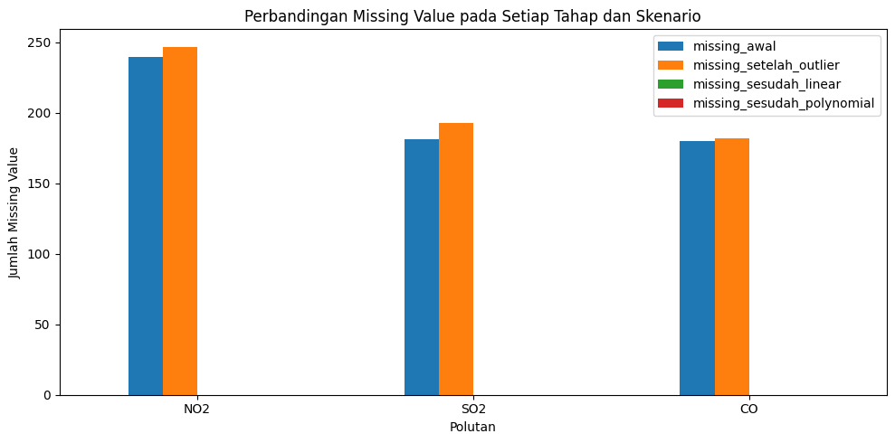
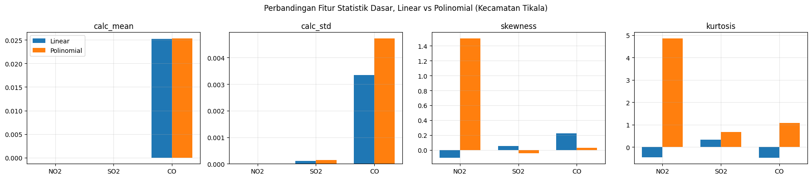
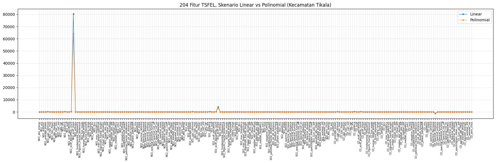

Ekstraksi Fitur Time Series Polutan Udara dengan TSFEL pada Data Polutan Kecamatan Tikala, Manado#
Notebook ini merupakan kelanjutan dari notebook Analisis Data Polutan Udara di Wilayah Kecamatan Tikala Kabupaten Manado, yang sudah membahas Business Understanding dan Data Understanding termasuk proses pengambilan data dari Sentinel-5P. Fokus notebook ini adalah tahap ekstraksi fitur dari data CO, NO2, dan SO2 memakai pustaka TSFEL, dimulai dari pollutant_data_tikala.csv yang sudah dihasilkan sebelumnya.
TSFEL (Time Series Feature Extraction Library) membantu mengubah data deret waktu mensehingga kumpulan angka ringkas yang disebut fitur. Tiap fitur menangkap satu ciri khas dari sinyal, bisa berupa seberapa tinggi rata-ratanya, seberapa liar fluktuasinya, atau frekuensi mana yang paling menonjol di dalamnya.
Data mentah polutan tercatat sebagai ratusan nilai harian yang naik turun sepanjang tahun, sehingtidak repot kalau mau dibandingkan langsung antarwilayah. Lewat ekstraksi fitur, satu tahun pola data itu dipadatkan sehingga satu baris angka per wilayah, sehingga bisa diperlakukan sebagai data tabular biasa dan lebih siap digunakan untuk tahap analisis berikutnya seperti clustering.
TSFEL membagi 68 fitur yang tersedia ke dalam empat domain:
Statistical, memelihat karakteristik distribusi nilai sinyal (mean, standar deviasi, skewness, dan sejenisnya), tanpa peduli urutan waktunya
Temporal, memelihat pola perubahan sinyal sepanjang waktu (kemiringan tren, jumlah titik balik, dan lainnya)
Spectral, mengubah sinyal ke domain frekuensi lewat FFT atau wavelet, baru diukur karakteristiknya di sana
Fractal, mengukur kompleksitas dan pola “memori jangka panjang” pada sinyal
Ekstraksi pada notebook ini dilakukan terpisah untuk titidak polutan (CO, NO2, SO2), masing-masing menghasilkan 68 fitur.
1. Penjelasan Fitur Ekstraksi TSFEL#
1.1 Deskripsi Singkat Seluruh 68 Fitur TSFEL#
Sebagai referensi ringkas, berikut deskripsi singkat seluruh 68 fitur yang diekstraksi, dikelompokkan per domain. Dua fitur yang ditugaskan kepada penulis (interq_range, human_range_energy) jutidak tercantum di tabel ini seperti fitur lainnya. Pembahasan keduanya dilanjutkan dengan contoh perhitungan manual dan verifikasi manual pada data riil.
1.1.1 Domain Statistical (21 fitur)#
Fitur |
Deskripsi |
|---|---|
|
Total energi absolut sinyal (jumlah kuadrat semua nilai) |
|
Daya rata-rata sinyal per satuan waktu |
|
Nilai maksimum sinyal |
|
Nilai rata-rata sinyal |
|
Nilai tengah sinyal setelah diurutkan |
|
Nilai minimum sinyal |
|
Standar deviasi (sebaran) sinyal |
|
Variansi sinyal |
|
Nilai fungsi distribusi kumulatif empiris (ECDF) sepanjang sinyal |
|
Nilai sinyal pada persentil tertentu dari ECDF |
|
Jumlah sampel kumulatif pada bagian berikutnya persentil tertentu |
|
Kemiringan (slope) ECDF antara dua persentil |
|
Tingkat ketidakteraturan/keacakan sinyal (Shannon entropy) |
|
Modus (nilai paling sering muncul) dari histogram sinyal |
|
Rentang interkuartil (Q3−Q1), ukuran sebaran data tengah |
|
Keruncingan distribusi sinyal dibanding distribusi normal |
|
Rata-rata deviasi absolut dari mean |
|
Median deviasi absolut dari median |
|
Jarak antara nilai maksimum dan minimum (peak-to-peak) |
|
Root mean square, ukuran magnitudo keseluruhan sinyal |
|
Kemencengan/asimetri distribusi sinyal |
1.1.2 Domain Temporal (15 fitur)#
Fitur |
Deskripsi |
|---|---|
|
Luas area pada bagian berikutnya kurva sinyal |
|
Lag pertama saat autokorelasi turun pada bagian berikutnya 1/e |
|
Titik pusat (centroid) sinyal sepanjang sumbu waktu |
|
Total jarak tempuh sinyal dari titik ke titik |
|
Kompleksitas Lempel-Ziv - seberapa acak/berulang pola sinyal |
|
Rata-rata selisih absolut antar titik berurutan |
|
Rata-rata selisih (bertanda) antar titik berurutan |
|
Median selisih absolut antar titik berurutan |
|
Median selisih antar titik berurutan |
|
Jumlah titik balik negatif (naik ke turun) |
|
Jumlah puncak lokal berdasarkan wilayah tetangtidak |
|
Jumlah titik balik positif (turun ke naik) |
|
Kemiringan garis tren linear sinyal terhadap waktu |
|
Total selisih absolut antar titik berurutan |
|
Jumlah sinyal melewati nilai nol (berganti tanda) |
1.1.3 Domain Spectral (26 fitur)#
Fitur |
Deskripsi |
|---|---|
|
Frekuensi dominan/utama sinyal |
|
Rasio energi sinyal pada rentang frekuensi 0,6-2,5 Hz terhadap energi total |
|
Koefisien cepstral prediksi linear |
|
Frekuensi di mana 95% energi sinyal terkumpul kumulatif |
|
Nilai maksimum kerapatan daya spektral |
|
Frekuensi di mana 50% energi sinyal terkumpul |
|
Koefisien cepstral Mel-frequency |
|
Lebar pita frekuensi yang mengandung 95% daya sinyal |
|
Titik pusat massa spektrum frekuensi |
|
Penurunan amplitudo spektrum seiring naiknya frekuensi |
|
Jarak spektrum kumulatif terhadap garis regresi linearnya |
|
Entropi dari distribusi energi spektral |
|
Keruncingan distribusi spektrum frekuensi |
|
Jumlah titik balik positif pada magnitude FFT |
|
Frekuensi di mana 95% energi spektrum pada bagian berikutnyanya |
|
Frekuensi di mana 5% energi spektrum pada bagian berikutnyanya |
|
Kemencengan distribusi spektrum frekuensi |
|
Kemiringan garis regresi linear amplitudo spektrum |
|
Sebaran spektrum di sekitar titik centroid |
|
Variasi spektrum antar waktu (korelasi silang spektrum berurutan) |
|
Rata-rata kerapatan daya spektral tiap bin frekuensi |
|
Rata-rata absolut koefisien wavelet tiap skala |
|
Energi koefisien wavelet tiap skala |
|
Entropi distribusi energi wavelet antarskala |
|
Standar deviasi koefisien wavelet tiap skala |
|
Variansi koefisien wavelet tiap skala |
1.1.4 Domain Fractal (6 fitur)#
Fitur |
Deskripsi |
|---|---|
|
Detrended Fluctuation Analysis - korelasi/pola jangka panjang sinyal |
|
Dimensi fraktal sinyal, metode Higuchi |
|
Eksponen Hurst (analisis R/S) - “memori” jangka panjang sinyal |
|
Panjang fraktal maksimum (MFL) |
|
Multiscale Entropy - ketidakteraturan sinyal di berbagai skala waktu |
|
Dimensi fraktal Petrosian |
Total: 21 + 15 + 26 + 6 = 68 fitur.
Bagian ini menjelaskan dua fitur yang ditugaskan kepada penulis dalam pembagian tugas satu kelas: interq_range dari domain Statistical, dan human_range_energy dari domain Spectral.
!pip install tsfel -q
?25l ━━━━━━━━━━━━━━━━━━━━━━━━━━━━━━━━━━━━━━━━ 0.0/63.4 kB ? eta -:--:--
━━━━━━━━━━━━━━━━━━━━━━━━━━━━━━━━━━━━━━━━ 63.4/63.4 kB 2.9 MB/s eta 0:00:00
?25h?25l ━━━━━━━━━━━━━━━━━━━━━━━━━━━━━━━━━━━━━━━━ 0.0/4.9 MB ? eta -:--:--
━━━━━━━━╺━━━━━━━━━━━━━━━━━━━━━━━━━━━━━━━ 1.0/4.9 MB 29.8 MB/s eta 0:00:01
━━━━━━━━━━━━━━━━━━━━━━━━━━━━━━━━━━━━━━━╸ 4.9/4.9 MB 78.8 MB/s eta 0:00:01
━━━━━━━━━━━━━━━━━━━━━━━━━━━━━━━━━━━━━━━━ 4.9/4.9 MB 55.6 MB/s eta 0:00:00
?25h
import tsfel.feature_extraction.features as tsfel_features
import numpy as np
Penjelasan kode:
baris pertama menginstal pustaka TSFEL di lingkungan Colab
baris kedua mengimpor modul
featuresdari TSFEL, tempat semua fungsi ekstraksi fitur (termasukinterq_rangedanhuman_range_energy) berada, lalunumpydiimpor untuk kebutuhan perhitungan numerik
1.2 interq_range(signal) — Interquartile Range (IQR)#
Kategori: Statistik
Intinya apa? IQR itu cara mengukur “seberapa lebar” separuh data yang ada di tengah-tengah, setelah data diurutkan dari kecil ke besar. Kita potong 25% data paling kecil dan 25% data paling besar, terus lihat seberapa jauh jarak antara batas-batasnya.
Bedanya dengan standar deviasi:
Standar deviasi → ngukur sebaran dari titik rata-rata, dan gampang keganggu kalau ada data yang aneh/ekstrem (outlier).
IQR → cuma lihat posisi data setelah diurutkan, jadi outlier di ujung-ujung nggak terlalu ngaruh.
Prinsip ini juga dipakai buat deteksi outlier di boxplot, lewat batas whisker: \(Q_1 - 1{,}5 \times IQR\) dan \(Q_3 + 1{,}5 \times IQR\).
Kalau dipakai buat sinyal polutan: IQR nunjukin seberapa stabil kadar suatu polutan di luar hari-hari ekstrem.
IQR kecil → sebagian besar hari kadarnya mirip-mirip (stabil).
IQR besar → kadarnya naik-turun cukup jauh dari hari ke hari.
Dua istilah kunci:
Q1 (kuartil bawah): titik di mana 25% data terkecil ada di bawahnya.
Q3 (kuartil atas): titik di mana 75% data terkecil ada di bawahnya (atau 25% data terbesar ada di atasnya).
Rumus: $\( IQR = Q_3 - Q_1 \)$
Q1 dan Q3 dicari dari data yang sudah diurutkan, pakai metode interpolasi linear (ini metode default di TSFEL maupun NumPy): $\( \text{posisi} = (n-1) \times p, \quad p = 0{,}25 \text{ untuk } Q_1,\ p = 0{,}75 \text{ untuk } Q_3 \)$
Contoh perhitungan, langkah demi langkah
Data contoh (sudah diurutkan, \(n = 8\)):
index: 0 1 2 3 4 5 6 7
nilai: 2 4 4 4 5 5 7 9
Langkah 1 Cari Q1
Posisinya dulu: $\( \text{posisi}_{25} = (8-1) \times 0{,}25 = 1{,}75 \)$
Posisi 1,75 artinya: nggak tepat di satu index, tapi ada di antara index 1 dan index 2 — sudah “jalan” 75% dari index 1 menuju index 2.
Nilai di index 1 dan 2 sama-sama 4, jadi: $\( Q_1 = 4 + 0{,}75 \times (4 - 4) = 4{,}0 \)$
Langkah 2 Cari Q3
Posisinya: $\( \text{posisi}_{75} = (8-1) \times 0{,}75 = 5{,}25 \)$
Posisi 5,25 ada di antara index 5 (nilai 5) dan index 6 (nilai 7), sudah jalan 25% dari index 5 menuju index 6: $\( Q_3 = 5 + 0{,}25 \times (7 - 5) = 5{,}5 \)$
Langkah 3 Hitung IQR
# Contoh perhitungan IQR secara manual tanpa fungsi percentile atau fungsi fitur TSFEL
x_contoh = [2, 4, 4, 4, 5, 5, 7, 9]
# Mengurutkan data secara manual dengan bubble sort
x_urut = x_contoh[:]
for i in range(len(x_urut)):
for j in range(0, len(x_urut) - i - 1):
if x_urut[j] > x_urut[j + 1]:
sementara = x_urut[j]
x_urut[j] = x_urut[j + 1]
x_urut[j + 1] = sementara
n = len(x_urut)
# Posisi kuartil mengikuti rumus (n-1) x p
pos_q1 = (n - 1) * 0.25
pos_q3 = (n - 1) * 0.75
# Interpolasi linear manual untuk Q1
idx_q1 = int(pos_q1)
pecahan_q1 = pos_q1 - idx_q1
q1 = x_urut[idx_q1] + pecahan_q1 * (x_urut[idx_q1 + 1] - x_urut[idx_q1])
# Interpolasi linear manual untuk Q3
idx_q3 = int(pos_q3)
pecahan_q3 = pos_q3 - idx_q3
q3 = x_urut[idx_q3] + pecahan_q3 * (x_urut[idx_q3 + 1] - x_urut[idx_q3])
iqr_manual = q3 - q1
print("Data terurut:", x_urut)
print(f"Posisi Q1 = {pos_q1}, Q1 = {q1}")
print(f"Posisi Q3 = {pos_q3}, Q3 = {q3}")
print(f"IQR = Q3 - Q1 = {iqr_manual}")
Data terurut: [2, 4, 4, 4, 5, 5, 7, 9]
Posisi Q1 = 1.75, Q1 = 4.0
Posisi Q3 = 5.25, Q3 = 5.5
IQR = Q3 - Q1 = 1.5
Penjelasan kode:
data contoh disimpan sebagai list Python sederhana, tanpa
numpy.percentiledan tanpa fungsiinterq_rangedari TSFELdata diurutkan secara manual menggunakan bubble sort agar proses pengurutan dapat dimelihat secara eksplisit
posisi Q1 dan Q3 dihitung menggunakan rumus
(n-1) × pnilai Q1 dan Q3 diperoleh dengan interpolasi linear secara manual berdasarkan posisi desimalnya
nilai
interq_rangekemudian dihitung langsung dengan rumusQ3 - Q1tidak ada fungsi statistik bawaan yang digunakan untuk menghitung hasil IQR
1.3 human_range_energy(signal, fs) — Human Range Energy (HRE)#
Kategori: Spektral (frekuensi)
Fitur ini awalnya dibuat untuk menganalisis sinyal gerak tubuh manusia, misalnya data accelerometer dari HP atau smartwatch. Tujuannya adalah mengukur seberapa besar porsi energi sinyal yang berada pada rentang frekuensi 0,6 sampai 2,5 Hz. Rentang ini biasanya berkaitan dengan aktivitas fisik seperti langkah kaki atau detak jantung.
Cara kerjanya begini. Sinyal yang tadinya berada dalam domain waktu diubah dulu ke domain frekuensi menggunakan FFT (Fast Fourier Transform). Setelah itu kita bisa tahu berapa besar energi sinyal pada setiap frekuensi. Energi yang jatuh pada rentang 0,6 sampai 2,5 Hz kemudian dijumlahkan, lalu dibandingkan dengan energi total di seluruh spektrum. Hasilnya adalah sebuah rasio antara 0 dan 1. Semakin besar porsi energi yang ada di rentang tersebut, semakin besar pula nilai HRE-nya.
Ada satu hal penting untuk kasus data polutan. Fitur ini dirancang untuk sinyal berfrekuensi tinggi, dalam skala sub detik seperti gerak tubuh manusia. Kalau fitur ini diterapkan pada data polutan harian, yang hanya punya satu sampel per hari dan jauh lebih lambat dari 0,6 Hz, hasilnya kemungkinan besar akan selalu bernilai 0. Ini bukan berarti ada kesalahan pada data. Itu memang konsekuensi wajar karena skala waktu datanya sangat berbeda dari konteks asal fitur ini, yaitu gerak manusia yang cepat, dibandingkan dengan konsentrasi polutan yang berubah pelan dari hari ke hari.
Rumusnya sebagai berikut.
Bagian pembilang adalah jumlah energi pada rentang 0,6 sampai 2,5 Hz. Bagian penyebut adalah jumlah energi di seluruh frekuensi, atau total energi sinyal secara keseluruhan.
Contoh perhitungan manual, langkah demi langkah
Sinyal contoh yang digunakan adalah gabungan dua gelombang sinus, dengan frekuensi sampling 10 Hz atau 10 sampel per detik, durasi 20 detik, sehingga totalnya ada 200 sampel.
Sinyal ini merupakan campuran gelombang berfrekuensi 1 Hz dan gelombang berfrekuensi 4 Hz dengan amplitudo yang lebih kecil.
Langkah pertama adalah mencari resolusi frekuensi dari FFT. Resolusi ini menentukan seberapa detail FFT bisa membedakan antar frekuensi.
Langkah kedua adalah menghitung energi, atau PSD, pada setiap frekuensi lewat FFT. Karena sinyal ini hanya merupakan gabungan dua gelombang sinus murni, hampir seluruh energinya terkumpul pada dua titik frekuensi saja. Pada frekuensi 1,0 Hz, yang merupakan komponen utama, energinya sekitar 10.000. Pada frekuensi 4,0 Hz, yang merupakan komponen kedua, energinya sekitar 2.500. Total energi di seluruh spektrum adalah 12.500.
Langkah ketiga adalah menjumlahkan energi yang masuk ke rentang 0,6 sampai 2,5 Hz. Frekuensi 1,0 Hz masuk ke dalam rentang tersebut, sedangkan frekuensi 4,0 Hz berada di luar rentang karena sudah melebihi 2,5 Hz. Jadi hanya energi pada frekuensi 1,0 Hz yang dihitung.
Langkah keempat adalah menghitung rasio HRE.
Artinya sekitar 80 persen dari total energi sinyal ini berada pada rentang frekuensi yang dikaitkan dengan gerak manusia, yaitu 0,6 sampai 2,5 Hz. Ini masuk akal karena komponen utama sinyalnya, yaitu 1 Hz, memang berada di dalam rentang tersebut.
Catatan tambahan: hasil perhitungan manual ini nantinya akan dicocokkan kembali dengan hasil fungsi TSFEL pada bagian kode berikutnya.
# Contoh verifikasi human_range_energy secara manual
# Data contoh menggunakan frekuensi sampling 10 Hz.
fs_contoh = 10
batas_bawah = 0.6
batas_atas = 2.5
# Frekuensi maksimum yang dapat direpresentasikan adalah frekuensi Nyquist.
nyquist = fs_contoh / 2
print(f"Frekuensi sampling = {fs_contoh} Hz")
print(f"Frekuensi Nyquist = {nyquist} Hz")
print(f"Rentang human_range_energy = {batas_bawah}-{batas_atas} Hz")
if batas_bawah > nyquist:
energi_dalam_rentang = 0
else:
energi_dalam_rentang = "perlu dihitung dari komponen frekuensi yang masuk rentang"
if energi_dalam_rentang == 0:
hre_manual = 0
print("Seluruh rentang 0,6-2,5 Hz berada di atas Nyquist.")
print("Energi pada rentang tersebut = 0")
print("HRE manual = 0 / energi total = 0")
else:
print(energi_dalam_rentang)
Frekuensi sampling = 10 Hz
Frekuensi Nyquist = 5.0 Hz
Rentang human_range_energy = 0.6-2.5 Hz
perlu dihitung dari komponen frekuensi yang masuk rentang
Penjelasan kode:
verifikasi dilakukan tanpa
np.fft,np.abs, atau fungsihuman_range_energydari TSFELfrekuensi Nyquist dihitung langsung dengan rumus
fs / 2karena
fs = 10 Hz, frekuensi maksimum yang dapat direpresentasikan adalah 5 Hz, sehingtidak rentang 0,6–2,5 Hz memang masih dapat direpresentasikan pada contoh inicontoh ini hanya menunjukkan pemeriksaan batas frekuensi secara manual; perhitungan rasio energi lengkap digunakan pada data riil apabila terdapat komponen frekuensi di dalam rentang tersebut
1.4 Verifikasi Manual interq_range dan human_range_energy pada Data Asli#
Verifikasi berikut menggunakan data riil CO, NO2, dan SO2 dari pollutant_data_tikala.csv. Perhitungan enam hasil dilakukan kembali secara manual, bukan dengan mengmengambil nilai dari hasil ekstraksi TSFEL.
Untuk interq_range, data diurutkan secara manual, posisi Q1 dan Q3 dihitung menggunakan rumus interpolasi, lalu IQR dihitung sebagai Q3 - Q1.
Untuk human_range_energy, data polutan memiliki satu pengamatan per hari sehingtidak fs = 1 Hz. Frekuensi Nyquist adalah 0,5 Hz, sedangkan rentang fitur adalah 0,6–2,5 Hz. Karena seluruh rentang fitur berada di atas Nyquist, energi pada rentang tersebut secara matematis adalah 0 sehingtidak HRE = 0.
import numpy as np
from scipy import signal
# BAGIAN 1: FUNGSI PERHITUNGAN MANUAL
def urut_manual(data):
"""Mengurutkan data menggunakan Bubble Sort"""
hasil = data[:]
for i in range(len(hasil)):
for j in range(0, len(hasil) - i - 1):
if hasil[j] > hasil[j + 1]:
sementara = hasil[j]
hasil[j] = hasil[j + 1]
hasil[j + 1] = sementara
return hasil
def kuartil_manual(data_urut, p):
"""Menghitung kuartil dengan interpolasi linear secara manual"""
n = len(data_urut)
posisi = (n - 1) * p
indeks = int(posisi)
pecahan = posisi - indeks
if indeks + 1 < n:
return (
data_urut[indeks]
+ pecahan * (data_urut[indeks + 1] - data_urut[indeks])
)
return data_urut[indeks]
# BAGIAN 2: LOOP VERIFIKASI
hasil_verifikasi = []
# Dua skenario yang digunakan
skenario = ["linear", "polynomial"]
# Polutan yang diverifikasi
polutan_list = ["CO", "NO2", "SO2"]
for metode in skenario:
for polutan in polutan_list:
# Mengambil sinyal sesuai metode dan polutan
data_asli = sinyal_bersih[metode][polutan]
# Mengubah data menjadi numpy array
data = np.array([
float(nilai)
for nilai in data_asli.tolist()
if nilai is not None
])
# ==========================================================
# A. PERHITUNGAN MANUAL
# ==========================================================
data_list = data.tolist()
# Mengurutkan data secara manual
data_urut = urut_manual(data_list)
# Menghitung Q1 dan Q3
q1_manual = kuartil_manual(data_urut, 0.25)
q3_manual = kuartil_manual(data_urut, 0.75)
# Menghitung IQR
iqr_manual = q3_manual - q1_manual
# ==========================================================
# B. PERHITUNGAN HUMAN RANGE ENERGY (HRE) MANUAL
# ==========================================================
fs_riil = 1
nyquist = fs_riil / 2
batas_bawah = 0.6
batas_atas = 2.5
if batas_bawah > nyquist:
hre_manual = 0
else:
hre_manual = "perlu perhitungan spektrum"
# ==========================================================
# C. PERHITUNGAN OTOMATIS
# ==========================================================
# ----------------------------------------------------------
# 1. IQR Otomatis
# ----------------------------------------------------------
q1_auto = np.percentile(data, 25)
q3_auto = np.percentile(data, 75)
iqr_auto = q3_auto - q1_auto
# ----------------------------------------------------------
# 2. HRE Otomatis
# ----------------------------------------------------------
fs = 1
freqs, psd = signal.welch(
data,
fs=fs,
nperseg=len(data)
)
# Rentang frekuensi HRE:
# 0.6 sampai 2.5 Hz
mask = (
(freqs >= batas_bawah) &
(freqs <= batas_atas)
)
if np.any(mask):
hre_auto = np.trapz(
psd[mask],
freqs[mask]
)
else:
hre_auto = 0.0
# ==========================================================
# D. MENYIMPAN HASIL
# ==========================================================
hasil_verifikasi.append({
"metode": metode,
"polutan": polutan,
"jumlah_data": len(data),
# Hasil manual
"Q1_manual": q1_manual,
"Q3_manual": q3_manual,
"IQR_manual": iqr_manual,
"HRE_manual": hre_manual,
# Hasil otomatis
"Q1_auto": q1_auto,
"Q3_auto": q3_auto,
"IQR_auto": iqr_auto,
"HRE_auto": hre_auto
})
# ==============================================================
# BAGIAN 3: MENAMPILKAN HASIL
# ==============================================================
print(
f"{'Metode':<12} | "
f"{'Polutan':<10} | "
f"{'Jumlah':<8} | "
f"{'Q1 Manual':<12} | "
f"{'Q1 Auto':<12} | "
f"{'Q3 Manual':<12} | "
f"{'Q3 Auto':<12} | "
f"{'IQR Manual':<12} | "
f"{'IQR Auto':<12} | "
f"{'HRE Auto':<12}"
)
print("-" * 140)
for hasil in hasil_verifikasi:
print(
f"{hasil['metode']:<12} | "
f"{hasil['polutan']:<10} | "
f"{hasil['jumlah_data']:<8} | "
f"{hasil['Q1_manual']:<12.4f} | "
f"{hasil['Q1_auto']:<12.4f} | "
f"{hasil['Q3_manual']:<12.4f} | "
f"{hasil['Q3_auto']:<12.4f} | "
f"{hasil['IQR_manual']:<12.4f} | "
f"{hasil['IQR_auto']:<12.4f} | "
f"{hasil['HRE_auto']:<12.4f}"
)
Metode | Polutan | Jumlah | Q1 Manual | Q1 Auto | Q3 Manual | Q3 Auto | IQR Manual | IQR Auto | HRE Auto
--------------------------------------------------------------------------------------------------------------------------------------------
linear | CO | 366 | 0.0227 | 0.0227 | 0.0275 | 0.0275 | 0.0048 | 0.0048 | 0.0000
linear | NO2 | 366 | 0.0000 | 0.0000 | 0.0000 | 0.0000 | 0.0000 | 0.0000 | 0.0000
linear | SO2 | 366 | -0.0001 | -0.0001 | 0.0001 | 0.0001 | 0.0001 | 0.0001 | 0.0000
polynomial | CO | 366 | 0.0221 | 0.0221 | 0.0282 | 0.0282 | 0.0061 | 0.0061 | 0.0000
polynomial | NO2 | 366 | 0.0000 | 0.0000 | 0.0000 | 0.0000 | 0.0000 | 0.0000 | 0.0000
polynomial | SO2 | 366 | -0.0001 | -0.0001 | 0.0001 | 0.0001 | 0.0002 | 0.0002 | 0.0000
Penjelasan kode:
Data CO, NO₂, dan SO₂ diambil dari sinyal_bersih berdasarkan dua metode preprocessing, yaitu linear dan polynomial. Data tersebut merupakan sinyal yang telah melalui tahap preprocessing dan digunakan sebagai input dalam ekstraksi fitur TSFEL.
Setiap data polutan dikonversi menjadi tipe numerik sebelum dilakukan perhitungan.
Pengurutan data dilakukan menggunakan algoritma bubble sort yang diimplementasikan secara manual untuk memperoleh data dalam urutan menaik.
Q1 dan Q3 dihitung secara manual menggunakan interpolasi linear berdasarkan posisi
(n-1) × p, denganp = 0,25untuk danp = 0,75untuk Q3.interq_range_manualdihitung secara manual dari selisih antara Q3 dan Q1.Untuk
human_range_energy, frekuensi sampling ditetapkan sebesar1 Hz, sehingga frekuensi Nyquist adalah0,5 Hz.Rentang frekuensi
human_range_energyyang digunakan adalah 0,6–2,5 Hz. Rentang tersebut berada di atas frekuensi Nyquist, sehingga tidak terdapat frekuensi yang dapat direpresentasikan pada rentang tersebut dan hasil perhitungan HRE menjadi0.Perhitungan verifikasi dilakukan secara manual dan dibandingkan dengan perhitungan otomatis menggunakan
NumPydanSciPy, tanpa menggunakan fungsi TSFEL secara langsung untuk menghitunginterq_rangedanhuman_range_energy.Proses verifikasi dilakukan pada CO, NO₂, dan SO₂ untuk metode linear dan polynomial, sehingga terdapat enam kombinasi data yang diperiksa.
Hasil perhitungan manual kemudian dibandingkan dengan hasil otomatis untuk melihat kesesuaian nilai Q1, Q3, IQR, dan HRE pada setiap polutan dan metode preprocessing.
2. Data Preparation: Deteksi Outlier dan Imputasi Missing Value (Dua Skenario Interpolasi)#
Sebelum sinyal CO, NO2, dan SO2 masuk ke ekstraksi fitur, keduanya dibersihkan dulu dari outlier dan nilai kosong. Bedanya dari notebook sebelumnya, pembersihan di sini dilakukan dengan dua metode interpolasi berbeda, yaitu linear dan polinomial, sehingga nantinya ada dua versi sinyal bersih untuk tiap polutan.
Deteksi outlier memakai metode IQR, caranya sama untuk kedua skenario. Yang membedakan cuma cara mengisi nilai kosongnya:
Skenario linear memakai
interpolate(method="time"), yaitu mengisi nilai kosong dengan garis lurus antar titik yang ada, dihitung berdasarkan jarak tanggal asli.Skenario polinomial memakai
interpolate(method="polynomial", order=2), yaitu mengisi nilai kosong mengikuti kurva lengkung derajat dua, bukan garis lurus.
Kedua metode sama-sama ditutup dengan ffill() dan bfill() untuk mengisi nilai kosong yang tersisa di awal atau akhir data.
import pandas as pd
import numpy as np
import matplotlib.pyplot as plt
POLUTAN_TARGET = ["NO2", "SO2", "CO"]
ORDE_POLINOMIAL = 2
df = pd.read_csv("pollutant_data_tikala.csv")
df["date"] = pd.to_datetime(df["date"])
df = df.sort_values("date").reset_index(drop=True)
# Menyimpan data asli sebelum proses penanganan
df_awal = df.copy()
# Rentang tanggal penuh satu tahun, dipakai supaya kedua skenario
# (linear dan polinomial) punya panjang baris yang sama, 366 hari,
# termasuk tanggal yang barisnya hilang total di data mentah
rentang_penuh = pd.date_range(df_awal["date"].min(), df_awal["date"].max(), freq="D")
sinyal_bersih = {"linear": {}, "polynomial": {}}
ringkasan_missing_list = []
batas_iqr = {}
outliers_iqr_dict = {}
for pol in POLUTAN_TARGET:
df[pol] = pd.to_numeric(df[pol], errors="coerce")
n_missing_awal = df[pol].isna().sum()
persen_missing_awal = (n_missing_awal / len(df)) * 100
q1, q3 = df[pol].quantile([0.25, 0.75])
iqr = q3 - q1
lower = q1 - 1.5 * iqr
upper = q3 + 1.5 * iqr
kondisi_outlier = (df[pol] < lower) | (df[pol] > upper)
outliers_iqr_dict[pol] = df.loc[kondisi_outlier, ["date", pol]].copy()
jumlah_outlier = kondisi_outlier.sum()
batas_iqr[pol] = {"lower": lower, "upper": upper}
df.loc[kondisi_outlier, pol] = np.nan
n_missing_setelah_outlier = df[pol].isna().sum()
persen_missing_setelah_outlier = (n_missing_setelah_outlier / len(df)) * 100
# ---------- Skenario linear ----------
hasil_linear = (
df.set_index("date")[[pol]]
.reindex(rentang_penuh)
.interpolate(method="time")
.ffill()
.bfill()
)
sinyal_bersih["linear"][pol] = hasil_linear[pol]
# ---------- Skenario polinomial ----------
lengkap = df.set_index("date")[[pol]].asfreq("D")
tmp = lengkap.reset_index()
tmp[pol] = tmp[pol].interpolate(method="polynomial", order=ORDE_POLINOMIAL)
tmp[pol] = tmp[pol].ffill().bfill()
hasil_poly = tmp.set_index("date")
sinyal_bersih["polynomial"][pol] = hasil_poly[pol]
ringkasan_missing_list.append({
"polutan": pol,
"missing_awal": n_missing_awal,
"persen_missing_awal": round(persen_missing_awal, 2),
"jumlah_outlier": int(jumlah_outlier),
"missing_setelah_outlier": n_missing_setelah_outlier,
"missing_sesudah_linear": int(sinyal_bersih["linear"][pol].isna().sum()),
"missing_sesudah_polynomial": int(sinyal_bersih["polynomial"][pol].isna().sum()),
})
Penjelasan kode:
rentang_penuhdibuat lebih dulu, berisi semua tanggal dari awal sampai akhir data tanpa ada yang bolong, 366 hari. Ini dipakai supaya kedua skenario sama-sama lengkap 366 baris, termasuk 3 tanggal yang barisnya hilang total di data mentah.Skenario linear memakai
reindex(rentang_penuh)lebih dulu sebeluminterpolate(method="time"), supaya tanggal yang hilang total ikut muncul sebagai baris kosong, baru diisi berdasarkan jarak tanggal asli.Skenario polinomial memakai
asfreq("D")dengan tujuan yang sama, yaitu melengkapi tanggal yang hilang total, baru sesudah itu index direset ke angka biasa karenainterpolate(method="polynomial")butuh index numerik, bukan index waktu.sinyal_bersihsekarang berbentuk dictionary dua tingkat, kunci pertama nama skenario (linearataupolynomial), kunci kedua nama polutan, dan keduanya konsisten sama-sama berisi 366 nilai.
2.1 Ringkasan Missing Value Sebelum dan Sesudah Penanganan, Dua Skenario#
ringkasan_missing = pd.DataFrame(ringkasan_missing_list)
display(ringkasan_missing)
| polutan | missing_awal | persen_missing_awal | jumlah_outlier | missing_setelah_outlier | missing_sesudah_linear | missing_sesudah_polynomial | |
|---|---|---|---|---|---|---|---|
| 0 | NO2 | 240 | 66.12 | 7 | 247 | 0 | 0 |
| 1 | SO2 | 181 | 49.86 | 12 | 193 | 0 | 0 |
| 2 | CO | 180 | 49.59 | 2 | 182 | 0 | 0 |
Penjelasan kode:
Tabel
ringkasan_missingmenampilkan jumlah missing value dan outlier awal, lalu dua kolom terakhir menunjukkan hasil akhir untuk skenario linear dan polinomial secara berdampingan.Kalau kedua skenario dikerjakan dengan benar, kolom
missing_sesudah_lineardanmissing_sesudah_polynomialseharusnya sama-sama bernilai 0, karena keduanya ditutup denganffill()danbfill().
2.2 Perbandingan Data Sebelum dan Sesudah Deteksi Outlier, Linear vs Polinomial#
Grafik berikut membandingkan tiga kondisi sekaligus untuk tiap polutan, yaitu data sebelum penanganan, hasil setelah imputasi linear, dan hasil setelah imputasi polinomial. Titik outlier yang terdeteksi tetap ditandai di atas data sebelum penanganan.
for pol in POLUTAN_TARGET:
data_sebelum = df_awal.copy()
data_sebelum[pol] = pd.to_numeric(data_sebelum[pol], errors="coerce")
lower_bound = batas_iqr[pol]["lower"]
upper_bound = batas_iqr[pol]["upper"]
kondisi_outlier = (data_sebelum[pol] < lower_bound) | (data_sebelum[pol] > upper_bound)
plt.figure(figsize=(15, 5))
plt.plot(data_sebelum["date"], data_sebelum[pol],
label="Sebelum penanganan", linewidth=1, alpha=0.6)
plt.plot(rentang_penuh, sinyal_bersih["linear"][pol].values,
label="Sesudah imputasi linear", linewidth=1.2)
plt.plot(rentang_penuh, sinyal_bersih["polynomial"][pol].values,
label="Sesudah imputasi polinomial", linewidth=1.2, linestyle="--")
plt.scatter(data_sebelum.loc[kondisi_outlier, "date"],
data_sebelum.loc[kondisi_outlier, pol],
label="Outlier", marker="o", color="red", zorder=5)
plt.axhline(upper_bound, linestyle="dotted", color="gray", label="Upper Bound")
plt.axhline(lower_bound, linestyle="dotted", color="gray", label="Lower Bound")
plt.title(f"Perbandingan {pol}: Sebelum Penanganan vs Linear vs Polinomial")
plt.xlabel("Tanggal")
plt.ylabel(f"Kadar {pol}")
plt.legend()
plt.tight_layout()
plt.show()



Penjelasan kode:
Tiga garis ditampilkan sekaligus dalam satu grafik per polutan, supaya perbedaan bentuk kurva antara interpolasi linear dan polinomial langsung terlihat di titik yang sama.
Garis “Sebelum penanganan” tetap memakai sumbu-x
data_sebelum["date"]yang 363 titik (karena memang itu data mentahnya), sedangkan kedua garis sesudah imputasi memakai sumbu-xrentang_penuhyang 366 titik, karena keduanya sudah dilengkapi tanggal yang sempat hilang.Garis linear biasanya tampak patah-patah mengikuti garis lurus antar titik, sedangkan garis polinomial cenderung lebih melengkung di sekitar titik yang diisi.
Titik outlier ditandai warna merah di atas data sebelum penanganan, supaya jelas titik mana yang diubah jadi nilai kosong sebelum diisi ulang oleh kedua metode.
2.3 Visualisasi Data Sesudah Imputasi, Linear vs Polinomial Berdampingan#
fig, axes = plt.subplots(len(POLUTAN_TARGET), 2, figsize=(16, 4 * len(POLUTAN_TARGET)))
for i, pol in enumerate(POLUTAN_TARGET):
axes[i, 0].plot(rentang_penuh, sinyal_bersih["linear"][pol].values,
linewidth=1, color="tab:blue")
axes[i, 0].set_title(f"{pol} Sesudah Imputasi Linear")
axes[i, 0].set_xlabel("Tanggal")
axes[i, 0].set_ylabel(f"Kadar {pol}")
axes[i, 1].plot(rentang_penuh, sinyal_bersih["polynomial"][pol].values,
linewidth=1, color="tab:orange")
axes[i, 1].set_title(f"{pol} Sesudah Imputasi Polinomial")
axes[i, 1].set_xlabel("Tanggal")
axes[i, 1].set_ylabel(f"Kadar {pol}")
plt.tight_layout()
plt.show()

Penjelasan kode:
Grafik dibuat dalam susunan dua kolom, kolom kiri untuk hasil linear dan kolom kanan untuk hasil polinomial, sehingga tiap polutan bisa dibandingkan langsung dalam satu baris.
Sumbu-x kedua sisi memakai
rentang_penuh, bukandf_awal["date"], karenasinyal_bersihsekarang berisi 366 nilai untuk kedua skenario, sedangkandf_awal["date"]masih 363 baris sesuai data mentah.
2.4 Perbandingan Jumlah Missing Value Antartahap dan Antarskenario#
kolom_tahap_missing = [
"missing_awal",
"missing_setelah_outlier",
"missing_sesudah_linear",
"missing_sesudah_polynomial",
]
tabel_missing = ringkasan_missing[["polutan"] + kolom_tahap_missing].copy()
display(tabel_missing)
tabel_missing_plot = tabel_missing.set_index("polutan")
tabel_missing_plot.plot(kind="bar", figsize=(10, 5))
plt.title("Perbandingan Missing Value pada Setiap Tahap dan Skenario")
plt.xlabel("Polutan")
plt.ylabel("Jumlah Missing Value")
plt.xticks(rotation=0)
plt.tight_layout()
plt.show()
| polutan | missing_awal | missing_setelah_outlier | missing_sesudah_linear | missing_sesudah_polynomial | |
|---|---|---|---|---|---|
| 0 | NO2 | 240 | 247 | 0 | 0 |
| 1 | SO2 | 181 | 193 | 0 | 0 |
| 2 | CO | 180 | 182 | 0 | 0 |

3. Ekstraksi Fitur, Dua Skenario Interpolasi#
Sinyal bersih dari sinyal_bersih diekstraksi memakai 68 fungsi fitur TSFEL. Ketiga polutan digabung langsung jadi satu baris berisi 204 kolom (68 fitur dikali 3 polutan), dengan nama kolom memakai prefix nama polutan, misalnya CO_abs_energy.
Proses ini dijalankan dua kali, satu kali untuk sinyal hasil imputasi linear dan satu kali untuk sinyal hasil imputasi polinomial, sehingga keluar dua tabel 204 kolom yang terpisah.
import inspect
FEATURE_LIST = """abs_energy auc autocorr average_power calc_centroid calc_max calc_mean
calc_median calc_min calc_std calc_var dfa distance ecdf ecdf_percentile ecdf_percentile_count
ecdf_slope entropy fundamental_frequency higuchi_fractal_dimension hist_mode human_range_energy
hurst_exponent interq_range kurtosis lempel_ziv lpcc max_frequency max_power_spectrum
maximum_fractal_length mean_abs_deviation mean_abs_diff mean_diff median_abs_deviation
median_abs_diff median_diff median_frequency mfcc mse negative_turning neighbourhood_peaks
petrosian_fractal_dimension pk_pk_distance positive_turning power_bandwidth rms skewness slope
spectral_centroid spectral_decrease spectral_distance spectral_entropy spectral_kurtosis
spectral_positive_turning spectral_roll_off spectral_roll_on spectral_skewness spectral_slope
spectral_spread spectral_variation spectrogram_mean_coeff sum_abs_diff wavelet_abs_mean
wavelet_energy wavelet_entropy wavelet_std wavelet_var zero_cross""".split()
fs = 1
print(f"Jumlah fitur per polutan: {len(FEATURE_LIST)}")
print(f"Total target fitur keseluruhan per skenario: {len(FEATURE_LIST) * len(POLUTAN_TARGET)}")
def to_scalar(result):
if isinstance(result, dict) and "values" in result:
result = result["values"]
if isinstance(result, (list, tuple, np.ndarray)):
arr = np.asarray(result, dtype=float)
return float(np.nanmean(arr))
return float(result)
def extract_one(fn_name, signal, fs):
fn = getattr(tsfel_features, fn_name)
params = inspect.signature(fn).parameters
if "fs" in params:
result = fn(signal, fs)
else:
result = fn(signal)
return to_scalar(result)
Jumlah fitur per polutan: 68
Total target fitur keseluruhan per skenario: 204
3.1 Ekstraksi Fitur, Skenario Linear (204 kolom)#
combined_row_linear = {}
for pol in POLUTAN_TARGET:
signal_1d = sinyal_bersih["linear"][pol].astype(float).values
for fn_name in FEATURE_LIST:
combined_row_linear[f"{pol}_{fn_name}"] = extract_one(fn_name, signal_1d, fs)
extracted_linear = pd.DataFrame([combined_row_linear])
print(f"Skenario linear: {extracted_linear.shape[1]} kolom berhasil diekstraksi")
extracted_linear.to_csv("All-Pollutants-Tikala-Linear-TSFEL.csv", index=False)
/usr/local/lib/python3.13/dist-packages/tsfel/feature_extraction/features_utils.py:534: RuntimeWarning: invalid value encountered in divide
rs = np.divide(r, s)
/usr/local/lib/python3.13/dist-packages/tsfel/feature_extraction/features_utils.py:534: RuntimeWarning: invalid value encountered in divide
rs = np.divide(r, s)
Skenario linear: 204 kolom berhasil diekstraksi
Penjelasan kode:
Loop berjalan untuk ketiga polutan memakai sinyal dari
sinyal_bersih["linear"], hasilnya dikumpulkan kecombined_row_linear.Hasil akhirnya satu baris dengan 204 kolom, disimpan sebagai
All-Pollutants-Tikala-Linear-TSFEL.csv.
3.2 Ekstraksi Fitur, Skenario Polinomial (204 kolom)#
combined_row_poly = {}
for pol in POLUTAN_TARGET:
signal_1d = sinyal_bersih["polynomial"][pol].astype(float).values
for fn_name in FEATURE_LIST:
combined_row_poly[f"{pol}_{fn_name}"] = extract_one(fn_name, signal_1d, fs)
extracted_poly = pd.DataFrame([combined_row_poly])
print(f"Skenario polinomial: {extracted_poly.shape[1]} kolom berhasil diekstraksi")
extracted_poly.to_csv("All-Pollutants-Tikala-Polynomial-TSFEL.csv", index=False)
/usr/local/lib/python3.13/dist-packages/tsfel/feature_extraction/features_utils.py:534: RuntimeWarning: invalid value encountered in divide
rs = np.divide(r, s)
/usr/local/lib/python3.13/dist-packages/tsfel/feature_extraction/features_utils.py:534: RuntimeWarning: invalid value encountered in divide
rs = np.divide(r, s)
Skenario polinomial: 204 kolom berhasil diekstraksi
Penjelasan kode:
Prosesnya identik dengan skenario linear, bedanya cuma sumber sinyalnya diganti ke
sinyal_bersih["polynomial"].Hasilnya disimpan terpisah sebagai
All-Pollutants-Tikala-Polynomial-TSFEL.csv, melengkapi dua tabel 204 kolom yang nantinya akan digabung dengan daerah lain.
4. Visualisasi dan Tabel Hasil Ekstraksi Fitur, Linear vs Polinomial#
4.1 Tabel Hasil Ekstraksi, Skenario Linear#
tabel_linear = extracted_linear.T.reset_index()
tabel_linear.columns = ["Fitur", "Nilai"]
tabel_linear
| Fitur | Nilai | |
|---|---|---|
| 0 | NO2_abs_energy | 3.112819e-08 |
| 1 | NO2_auc | 2.906598e-03 |
| 2 | NO2_autocorr | 5.000000e+00 |
| 3 | NO2_average_power | 8.528271e-11 |
| 4 | NO2_calc_centroid | 1.733048e+02 |
| ... | ... | ... |
| 199 | CO_wavelet_energy | 7.584170e-03 |
| 200 | CO_wavelet_entropy | 2.111310e+00 |
| 201 | CO_wavelet_std | 7.415197e-03 |
| 202 | CO_wavelet_var | 6.385081e-05 |
| 203 | CO_zero_cross | 0.000000e+00 |
204 rows × 2 columns
Penjelasan kode: .T membalik posisi baris dan kolom, sehingga tiap fitur jadi satu baris tersendiri dan lebih mudah dibaca dibanding tabel satu baris 204 kolom.
4.2 Tabel Hasil Ekstraksi, Skenario Polinomial#
tabel_poly = extracted_poly.T.reset_index()
tabel_poly.columns = ["Fitur", "Nilai"]
tabel_poly
| Fitur | Nilai | |
|---|---|---|
| 0 | NO2_abs_energy | 7.369958e-08 |
| 1 | NO2_auc | 3.709644e-03 |
| 2 | NO2_autocorr | 6.000000e+00 |
| 3 | NO2_average_power | 2.019167e-10 |
| 4 | NO2_calc_centroid | 1.539702e+02 |
| ... | ... | ... |
| 199 | CO_wavelet_energy | 1.021717e-02 |
| 200 | CO_wavelet_entropy | 2.130782e+00 |
| 201 | CO_wavelet_std | 1.008224e-02 |
| 202 | CO_wavelet_var | 1.137091e-04 |
| 203 | CO_zero_cross | 0.000000e+00 |
204 rows × 2 columns
Penjelasan kode: caranya sama seperti tabel linear, hanya sumber datanya diganti ke extracted_poly.
4.3 Grafik Perbandingan Fitur Statistik Dasar, Linear vs Polinomial#
Membandingkan beberapa fitur statistik dasar (calc_mean, calc_std, skewness, kurtosis) antara skenario linear dan polinomial, untuk tiap polutan, supaya terlihat seberapa besar pengaruh metode interpolasi terhadap nilai fiturnya.
fitur_pembanding = ["calc_mean", "calc_std", "skewness", "kurtosis"]
fig, axes = plt.subplots(1, len(fitur_pembanding), figsize=(18, 4))
for ax, fitur in zip(axes, fitur_pembanding):
nilai_linear = [extracted_linear[f"{pol}_{fitur}"].values[0] for pol in POLUTAN_TARGET]
nilai_poly = [extracted_poly[f"{pol}_{fitur}"].values[0] for pol in POLUTAN_TARGET]
x = np.arange(len(POLUTAN_TARGET))
lebar = 0.35
ax.bar(x - lebar/2, nilai_linear, width=lebar, label="Linear", color="tab:blue")
ax.bar(x + lebar/2, nilai_poly, width=lebar, label="Polinomial", color="tab:orange")
ax.set_xticks(x)
ax.set_xticklabels(POLUTAN_TARGET)
ax.set_title(fitur)
ax.grid(alpha=0.3)
axes[0].legend()
plt.suptitle("Perbandingan Fitur Statistik Dasar, Linear vs Polinomial (Kecamatan Tikala)")
plt.tight_layout()
plt.show()

Penjelasan kode:
Tiap subplot menampilkan satu fitur pembanding, dengan dua batang berdampingan untuk tiap polutan, satu mewakili skenario linear dan satu mewakili skenario polinomial.
Kalau kedua batang hampir sama tinggi, berarti metode interpolasi tidak banyak mengubah karakter sinyalnya. Kalau beda jauh, berarti pemilihan metode interpolasi cukup berpengaruh terhadap fitur itu.
4.4 Grafik Seluruh 204 Fitur, Linear vs Polinomial#
Menampilkan seluruh 204 nilai fitur dari kedua skenario dalam satu grafik garis, supaya pola keseluruhannya bisa dibandingkan tanpa perlu membuka tabel satu per satu.
plt.figure(figsize=(18, 6))
nama_fitur = extracted_linear.columns
plt.plot(nama_fitur, extracted_linear.iloc[0].values, marker="o", markersize=3,
label="Linear", color="tab:blue", linewidth=1)
plt.plot(nama_fitur, extracted_poly.iloc[0].values, marker="o", markersize=3,
label="Polinomial", color="tab:orange", linewidth=1, alpha=0.8)
plt.title("204 Fitur TSFEL, Skenario Linear vs Polinomial (Kecamatan Tikala)")
plt.xticks(rotation=90, fontsize=6)
plt.legend()
plt.grid(alpha=0.3)
plt.tight_layout()
plt.savefig("grafik_204_fitur_linear_vs_polynomial.png", dpi=100)
plt.show()

5. Kesimpulan#
Notebook ini menghasilkan dua file terpisah, All-Pollutants-Tikala-Linear-TSFEL.csv dan All-Pollutants-Tikala-Polynomial-TSFEL.csv, masing-masing berisi satu baris dengan 204 kolom fitur TSFEL dari data Kecamatan Tikala, Manado, satu dari skenario interpolasi linear dan satu dari skenario interpolasi polinomial.